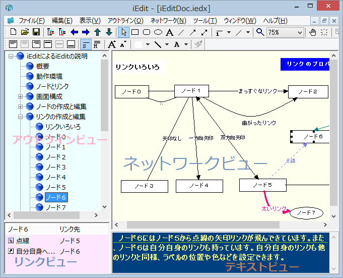

画面構成
iEdit は３つのペインからなる子ウィンドウを持つ、MDI(Multi Document Interface) のアプリケーションです。複数のファイルをオープンして編集できます。１つのファイルは３つのペインで分割された４つのビューで表されます。ペインの大きさ、位置はマウスにより調整可能で、調整した結果を次回の起動時に再現することも可能です。

アウトラインビュー
アウトラインビューは、ツリービューです。ツリー上にノードの階層的な関係が表示されます。ノードの階層を上げ下げしたり、同じ階層内での順序を変えたりできます。また、ツリーアイテムのラベルを直接編集することもできます。ツリーアイテムのラベルを変更すると、ネットワークビューにおけるノードのラベルも更新されます。 アウトラインビューは iEdit ドキュメント内のすべてのノードにアクセスできるナビゲータの役割とどのノードが選択されているのかという状態を管理する役割を果たしています。
リンクラインビュー
リンクビューは、ノードとノードの関連であるリンクの一覧を表示するペインです。アウトラインビューで選択されているノードに関連するリンクをリスト表示します。
ネットワークビュー
ネットワークビューは、右上のペインであり、ノードの階層的な関係ではなく、二次元的な関係を表現します。ネットワークビューの操作は、簡単なドローイングソフトのようになっています。
テキストビュー
テキストビューは右下のペインです。ここには、ノードに属するテキストが表示され、編集することができます。テキストエディターとしての機能はメモ帳と同じです。